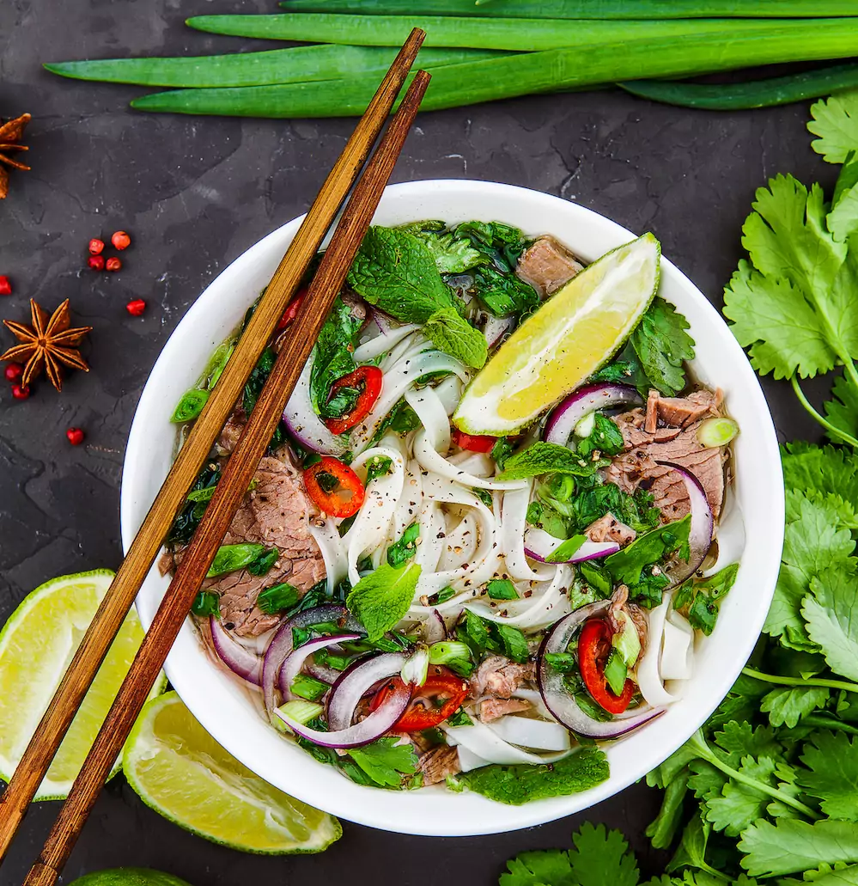
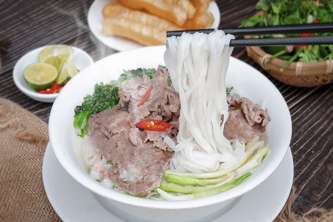

Giới thiệu về Phở Bò
Phở bò là một trong những món ăn truyền thống và nổi tiếng nhất của Việt Nam, với hương vị đậm đà, thơm ngon.
Thành phần chính
- Bánh phở
- Thịt bò tươi
- Nước dùng hầm xương
Cách thưởng thức
Phở bò thường được ăn kèm với rau thơm, giá đỗ, chanh và tương ớt để tăng thêm hương vị.
